This video is dedicated to you who are fighting for your dream.
Happiness
comes from struggle
Happy Family Culture
Soil
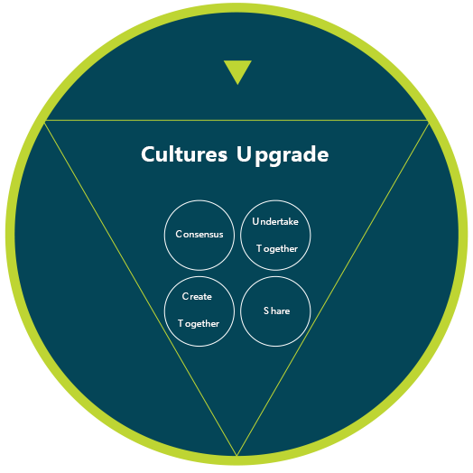
create and share together-striver culture
Foundation
Cultural project
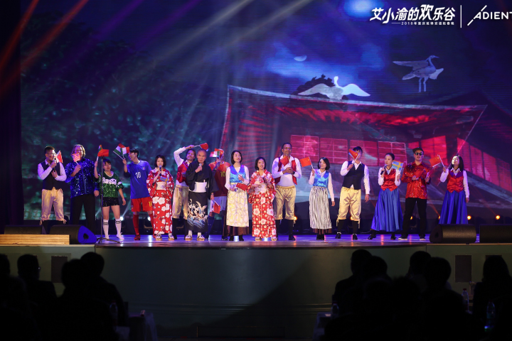
Spring Festival Gala Evening
At Chongqing Yanfeng Adient ，the Spring Festival is an annual event .It’s the stage that belongs to “Aixiaoyu,”every year, the theme of the Spring Festival gala all goes according to the occasion , all the programs are produced by Chongqing Yanfeng Adient group according to the popular elements and make uo the audio-visual feast.
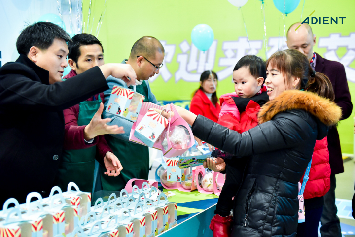
Family Week
We invite the family member of employees to participate in the special activities on November 1st of each year, so as to feel the happy family culture that Chongqing Yanfeng Adient always advocates. Therefore, we call it “family day”. In the traditional sense, (1+1)+1 represents, 1+1 represents the two main members of the family, and the remaining 1 represents the child. So we set November 1st as parents’ day every year.
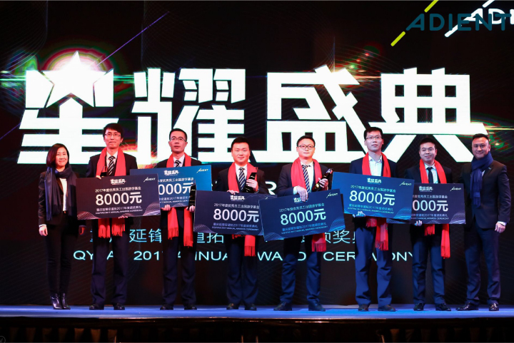
Award Ceremony
Since 2015, Chongqing Yanfeng Adient has been holding an independent annual award ceremony in Chongqing. We encourage everyone and the team to actively select candidates for the awards ,and call on Aixiaoyu to continuously explore knowledge and pursue excellence.
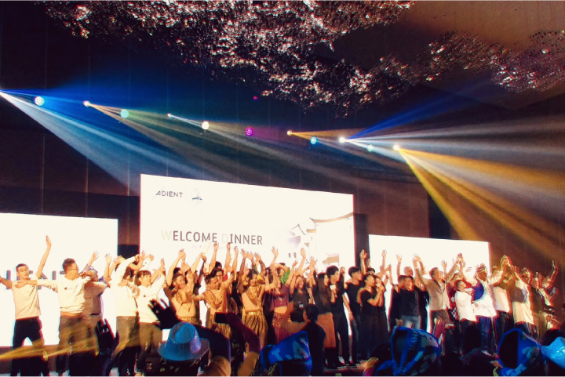
Team Rally
Since 1996, Chongqing Yanfeng Adient factories have organized teams of employees to participate in the competition, and the latest continuous improvement results of Chongqing Yanfeng Adient are presented through performances, dances and other forms on the stage of team gatherings. This activity will be held in July every year in Chongqing Yanfeng Adient plant internal competition, the second half of the year will be held in China and the Asia-pacific region competition.
The Power of Culture
To be an enterprise is to be a culture.
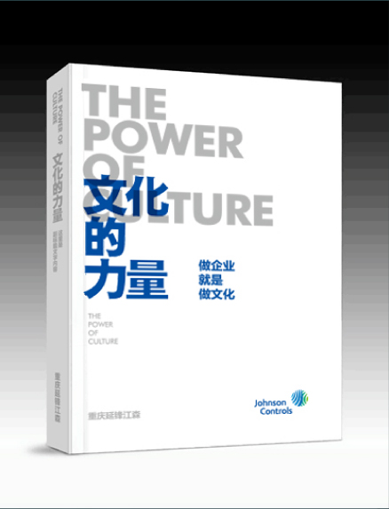
The power of culture is dedicated to our dear friends,learning and inheriting, and heading for the future.
The power of culture is dedicated to outstanding peers,sharing and moving foward.
The power of culture is dedicated to our esteemed friends,cast gravel led pearl, quote and prove fully.
The power of culture is dedicated to our next generation,to give back to society and to help the public good.
This book by Chongqing Yanfeng Adient company all colleagues with the feelings of blood is thicker than water . This is the temper of an enterprise on itself, but also a group of people who will always have blood in their bones, and the past they have witnessed , a precious memorial for growth created by themselves. The 4,000 copies of the first volume will be donated to the blue sky fund to support environmental sustainability, social services, and education
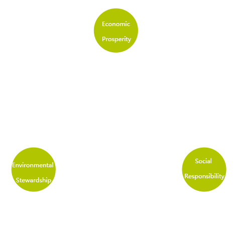
Social responsibility
At Chongqing Yanfeng Adient , our definition of success is not limited to financial success, we care more about environmental protection and social responsibility. Therefore, the blue sky plan based on the triple bottom line of environmental protection, community responsibility and employee leadership came into being.
The blue sky fund
The company officially established the blue sky fund in 2014, and for the first time in that year’s Spring Festival gala to inject 131,400 yuan into the blue sky fund. The blue sky fund will be used to support the blue sky project every year, to provide financial support for the activities of the blue sky project, as well as to help employees in need within the enterprise. As of October 2018, the blue sky fund has helped more than 900,000 yuan.
The blue sky project
The blue sky project is a global employee incentive plan, designed to encourage Chongqing Yanfeng Adient to form volunteer teams, cooperation with local public welfare organization or school to support the sustainable development of environment , social services, education career, the company employees of volunteers from 3 to 100 people in the project team, and with the selected project of the volunteer public welfare organization or school.
The significance of the blue sky project
The local community benefits from volunteer participation, and we can benefit from improved leadership and team building. CQYFAS ’s social responsibility project shows the company’s commitment to achieving the highest standards of performance , teamwork, inclusiveness, leadership and growth. The company supports its employees’ participation in voluntary global initiatives and values the important contributions they make to the company.
Series featured blue sky project activities
Chongqing Yanfeng Adient has been continuously practicing the blue sky project, many fine blue sky projects have been precipitated over the years.
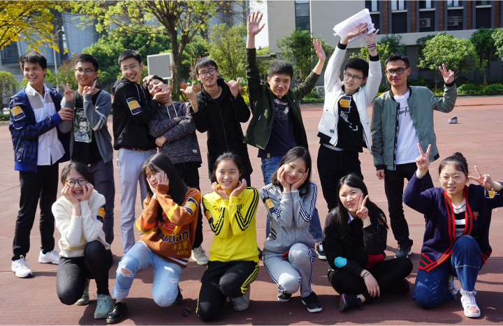
College leadership challenge
The blue sky project takes the school as the target community to carry out a series of campus activities with the theme of environmental projection and college students’ leadership .Through a series of high-quality and demanding team challenges , the leadership ability of contemporary college students is exercised, the sense of social responsibility is cultivated , and the environmental protection concept is publicized.
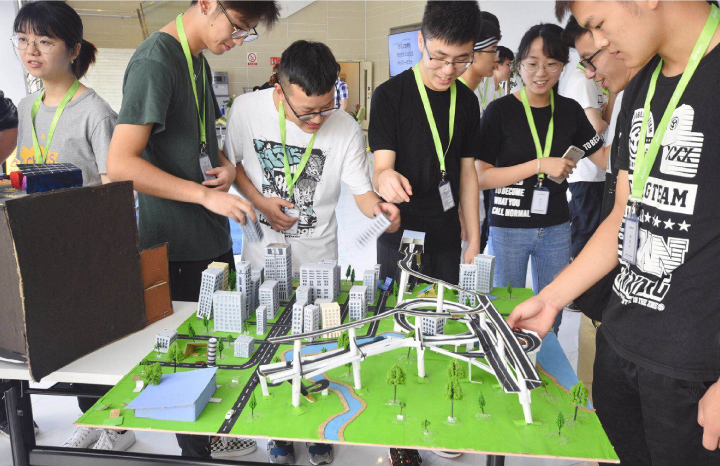
School and enterprise Open day
We invite all the winning teams of the “college student leadership challenge”to go to Chongqing Yanfeng Adient , Chongqing to display their winning works ,visit the company and local factories, and conduct in-depth visits between the university and enterprises.
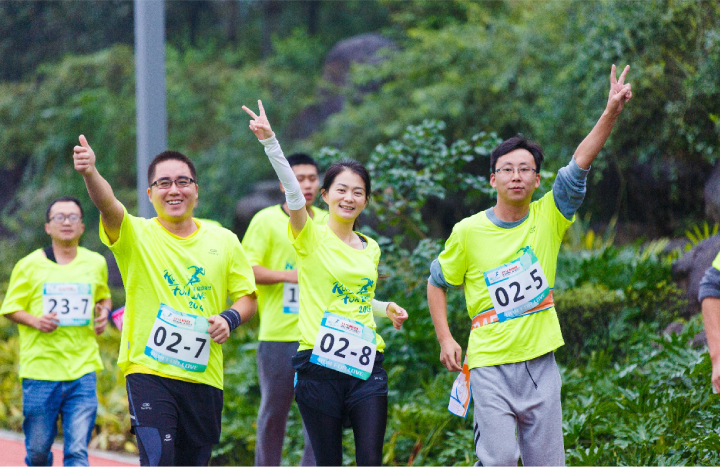
Run for love
”Run for love”8-hour relay public welfare race originated in 2014, it is an event that USES” public welfare, self-help and environmental protection” throughout the preliminary training , activity preparation and competition. This activity adheres to the principle of voluntary donation. In the end, every step you make and every sponsorship fund donated by the company will be used to fund the construction of schools and help poor children in the later stage.
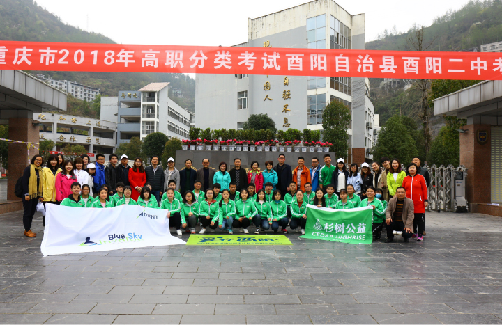
Youyang no.2 middle school cares for students
Shanshu public welfare and Chongqing Yanfeng Adient blue sky development fund jointly set us “shanshu class”
In Chongqing Youyang no.2 middle school. Since 2017, Chongqing Yanfeng Adient has set up a volunteer team of 30 people every year to help 80”shuangte”(especially poor and excellent)students one on one, and has raised 9,000yuan for each student’s living expenses for three years, a total of 720,000yuan has been raised.
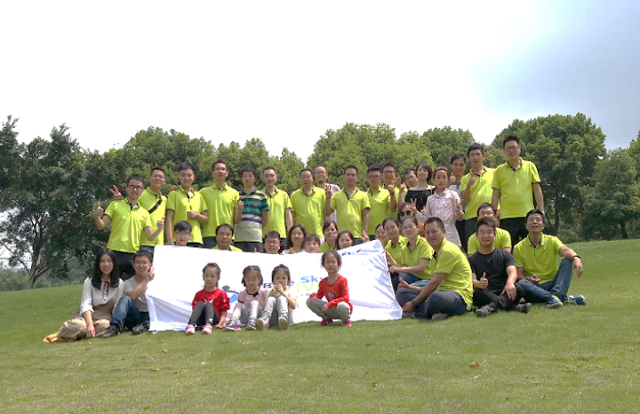
Factory blue sky project
Every year, each branch company of Chongqing Yanfeng Adient road in Chongqing organizes volunteers to participate in the blue sky project by themselves and actively participates in social environmental protection, student aid and other public welfare projects.
Magazine Cognition
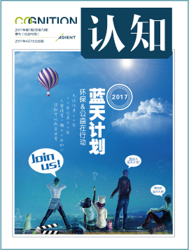
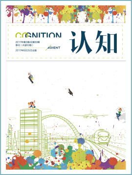
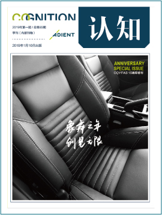
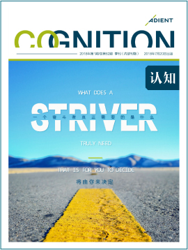